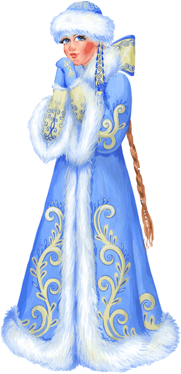
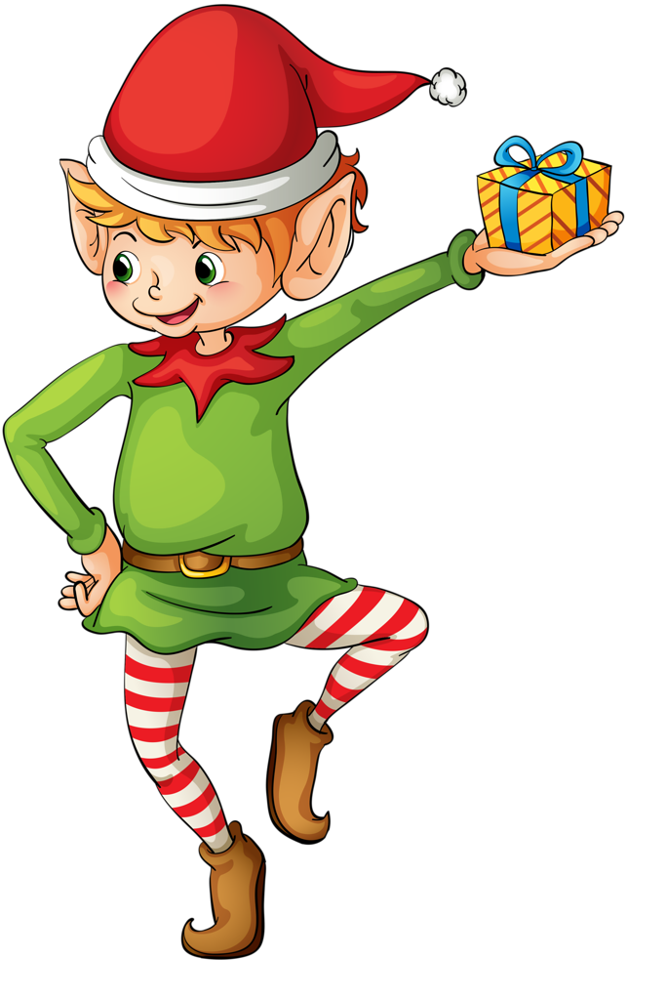
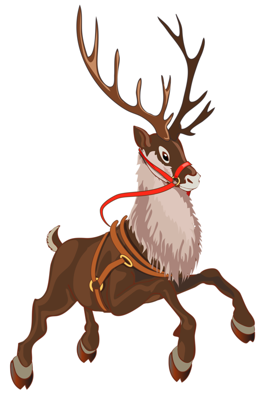

Дед Моро́з — главный сказочный персонаж на празднике Нового года, русский вариант рождественского дарителя. Известен как Мороз Иванович с 1840 года, но создание канонического образа Деда Мороза как обязательного персонажа новогоднего, а не рождественскогопраздника произошло в советское время и относится к концу 1930-х годов, когдапосле нескольких лет запрета вновь была разрешена ёлка.Прообразами Деда Мороза являются персонаж славянского сказочного фольклора и календарных обрядов, которого называли обобщённым именем Мороз, и Святой Николай. Дед Мороз изображается как старик в цветной — голубой, синей, красной или белой шубе, с длинной белой бородой и посохом в руке, в валенках. Ездит на тройке лошадей. Часто приходит в сопровождении внучки Снегурочки, а во времена СССР и Нового Года — мальчика в красной шубе и шапке (на одном из этих предметов одежды часто имелось цифровое обозначение наступающего/наступившего года). Мальчик Новый Год выступал как своеобразный преемник Деда Мороза; наиболее часто он был изображён на новогодних открытках конца 1950-х — середины 1980-х годов, а в одном из мультфильмов даже якобы является внуком Деда Мороза и летает на самолёте, после чего популярность этого персонажа стала падать и к настоящему времени он почти забыт. Также Деда Мороза иногда сопровождают различные лесные звери.Мороз как природная стихия издавна персонифицировался восточными славянами. Он представлялся ими в виде невысокого старичка с длинной седой бородой, который бегает по полям и вызывает стуком трескучие морозы. Образ Мороза нашёл своё отражение в русских пословицах, поговорках, сказках. К примеру, в волшебных сказках Мороз предстаёт в виде волшебного помощника, выступая под прозвищами «Студенец», «Трескунец», или как даритель при правильном поведении сказочного героя. Снежная морозная зима в представлении славянина-земледельца связывалась с будущим хорошим урожаем. Об этом судили по наличию рождественских или крещенских морозов. Поэтому в Святки и Чистый четверг было принято совершать обряд «клика́нья мороза»: его зазывали на трапезу и угощали ритуальной пищей — блинами и кутьёй. В то время точно так же призывали в дом души умерших предков, а кутья — традиционная поминальная еда у славян. Еда для мороза оставлялась на окне или на крыльце. Тогда же Мороза просили не приходить летом и не портить урожай
| Способности | Сила | Стойкость |
| Разносит подарки 7000000000 людей за 1 ночь | Супер скорость | 10000000000 |
Друзья Деда Мороза:
  